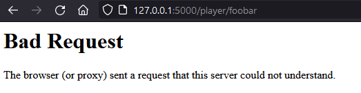
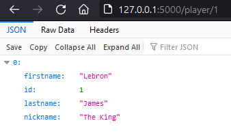

A simple Flask API example of NBA players

In my previous post, I explained how to start a Flask project into Visual Code. It is time to experiment the Flask framework by creating a very simple API. As an example, let’s say we want to implement a NBA players API.
The data
We don’t want to bother with a database for this example so we will use a simple JSON object. This JSON object will include all players with their attributes : firstname, lastname, nickname and an ID :
players = [{
"id": 1,
"firstname": "Lebron",
"lastname": "James",
"nickname": "The King"
},
{
"id": 2,
"firstname": "Earvin",
"lastname": "Johson",
"nickname": "Magic"
},
{
"id": 3,
"firstname": "Julius",
"lastname": "Erving",
"nickname": "Dr. J"
}]
The endpoints
Let’s make it as simple as possible : We want 2 endpoints:
- “getPlayers()” that returns all the NBA players with all their attributes
- “getPlayer(id)” that returns only one player based on his ID
To design it, we must define a route for each endpoints using Flask implementation : https://flask.palletsprojects.com/en/2.0.x/quickstart/#routing
Since error codes are very important for API consumers to understand what doesn’t work, be sure to catch the exception and return the correct HTTP code using the abort() function as per Flask documentation : https://flask.palletsprojects.com/en/2.0.x/quickstart/#redirects-and-errors

@app.route('/players/')
def getPlayers():
try:
return 'List of players'
except ValueError:
abort(400)
@app.route('/player/<id>')
def getPlayer(id):
try:
return 'Attributes of player'
except ValueError:
abort(400)
GetPlayers
Now we have to implement the 2 functions. The first one is quite simple, there is no need for pre-processing the data, we want it all. So let’s return the players object :
TypeError: The view function did not return a valid response. The return type must be a string, dict, tuple, Response instance, or WSGI callable, but it was a list.
127.0.0.1 - - [25/Oct/2021 15:44:13] "GET /players/ HTTP/1.1" 500
Oops ! That’s right, the Flask view function must return a string object. Hopefully, Flask has the jsonify() function that serialize data to a JSON and wrap it in a flask.Response class with a standard application/json mimetype.
@app.route('/players/')
def getPlayers():
try:
return jsonify(players)
except ValueError:
abort(400)
GetPlayer(id)
Now, we need some pre-processing to get the right player. The Id is sent as an attribute of the requested player. “players” JSON object is not formatted as a key=id/value=playerAttributes. It means we have to navigate within all the object. How about a for loop ? Yes, why not but how about using the true power of Python ?
filter() function construct an iterator from an iterable element for which a function return True. In our example, filter(the id of the player, the json object).
filter(functionToFoundTheID, players)
We iterate within “players” variable using a lambda() function that return True when the id is found.
lambda x: x["id"] == id
Finaly, we need to convert the filter() returned Iterator as a list. Ultimately, for security purpose, make sure the id URL attribute is an integer. So we have :
@app.route('/player/<id>')
def getPlayer(id):
try:
idPlayer = int(id)
result = list(filter(lambda x: x["id"] == idPlayer, players))
if result:
#return 200 json result
return jsonify(result)
# unknown id
else:
abort(404)
# not an int(id)
except ValueError:
abort(400)
Conclusion
You can now run your Flask project and request /players/ and /player/X URLs.

The whole project code can be found here : https://github.com/kbrault/pyFlaskAPIExample